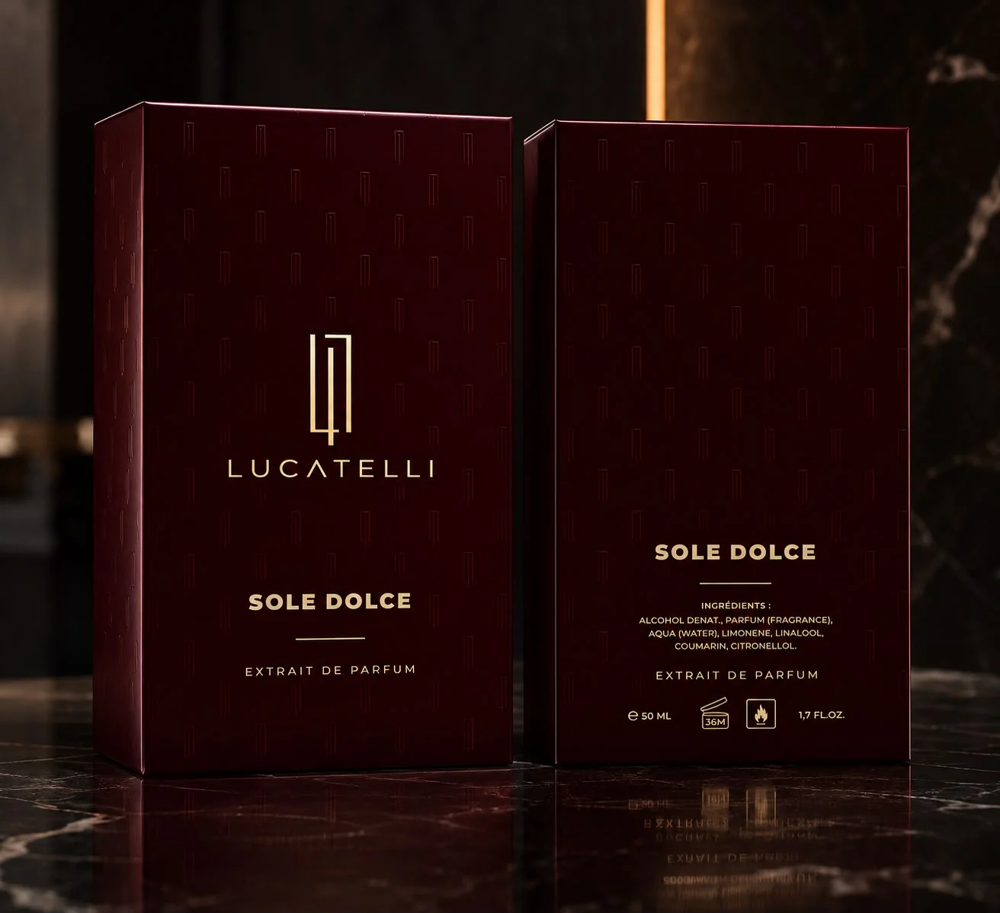
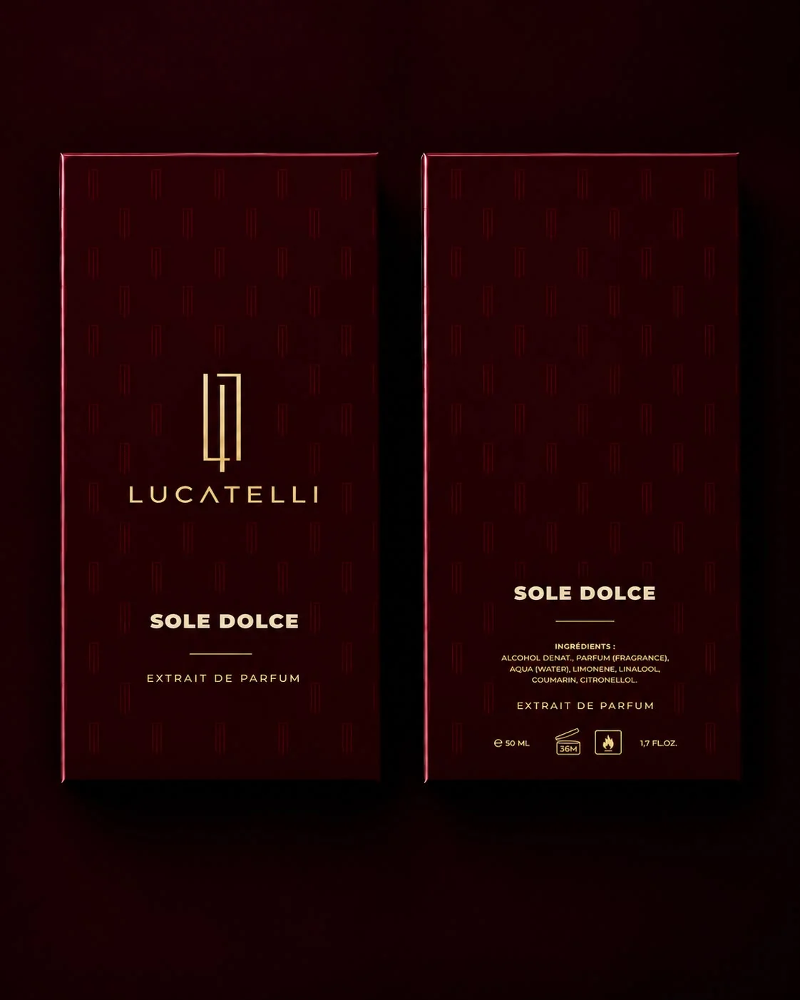

La Maison Lucatelli
Des parfums rares, pensés comme des objets que l'on garde.
« Un parfum se regarde avant de se sentir. Il se pose sur une coiffeuse, se transmet, se reconnaît de loin. Nous voulions des flacons qui méritent cette place. »
La Maison Lucatelli

Une maison, un nom
Lucatelli est née d'un désir simple : créer des parfums qui ont la tenue d'un bel objet. Pas une collection pléthorique, mais quelques extraits travaillés avec patience, chacun dans un flacon qui lui ressemble.
Le nom évoque l'Italie, ses palais, sa lumière dorée de fin d'après-midi. C'est cet horizon qui guide chacune de nos créations.

Le verre rubis
Nos flacons sont taillés dans un verre rouge profond, teinté dans la masse. Sous la lumière, il s'éclaire comme un vitrail ; dans l'ombre, il prend la profondeur d'une pierre précieuse.
Au sommet, un bouchon en métal doré, tranché en biseau, cerclé d'une bague gravée au nom de la Maison.

L'Italie pour horizon
La feuille d'acanthe couronne les colonnes corinthiennes depuis l'Antiquité. Nous l'avons fait monter le long du verre de notre second flacon, Acanto, sculptée en relief du pied jusqu'à l'épaule.
Architecture, lumière, art de vivre : l'Italie reste notre source d'inspiration, du dessin du flacon jusqu'au choix des matières.

L'écrin
Un carton rigide bordeaux, un monogramme doré à chaud, un motif répété en relief. L'écrin n'est pas un emballage : c'est la première chose que l'on découvre, et souvent celle que l'on garde.
Chaque commande peut être accompagnée d'une carte écrite à la main.
Ce qui nous guide
Des extraits de parfum, concentrés et tenaces, et des flacons pensés dans leurs moindres détails.
Peu de créations, mais chacune aboutie. Nous préférons un parfum juste à une collection entière.
Gravure, écrin, carte manuscrite, échantillon : chaque commande est préparée comme un cadeau.